UDN
Search public documentation:
UnrealFrontendCH
English Translation
日本語訳
한국어
Interested in the Unreal Engine?
Visit the Unreal Technology site.
Looking for jobs and company info?
Check out the Epic games site.
Questions about support via UDN?
Contact the UDN Staff
日本語訳
한국어
Interested in the Unreal Engine?
Visit the Unreal Technology site.
Looking for jobs and company info?
Check out the Epic games site.
Questions about support via UDN?
Contact the UDN Staff
Unreal Frontend
概述
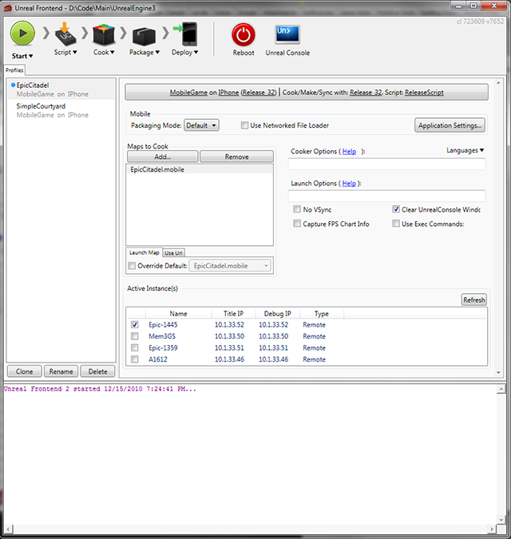
在上面的屏幕截图中，正在使用UFE在iPhone上测试游戏。将会执行以下步骤：- 编译脚本代码
- 烘焙数据
- 针对iPhone打包游戏。
- 部署到设备上。
在PC上迭代
访问 Unreal Frontend
Binaries 文件夹中找到。
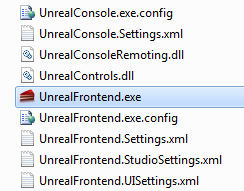
也可以通过UDK安装文件的开始菜单中启动该应用程序。它位于 [UDK 版本] > Tools（工具） 文件夹下。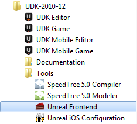
Unreal Frontend界面
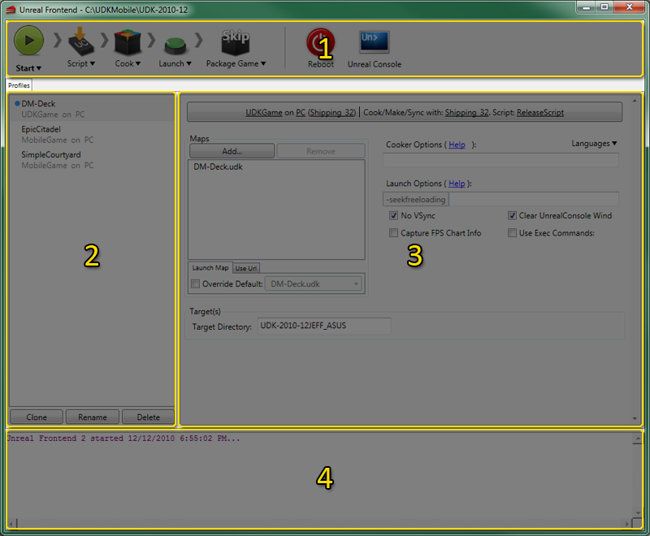
工具条
Unreal Frontend中的工具条用于启动单独的任务、配置及启动 job（任务）（或者一系列的任务）、启动UnrealConsole或者从新引导所有选中的目标。| 按钮 | 描述 |
|---|---|
|
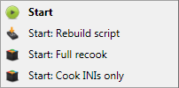 |
启动当前的pipeline job（管道任务）。
Menu Options(菜单项)
|

| 停止当前的pipeline job(管道任务)。 |
|
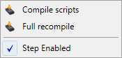 |
针对该工作流程中Compile Script（编译脚本）步骤的选项和动作。
菜单项
|
|
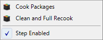 |
针对该管道任务中Cook （烘焙）步骤的选项和动作。
菜单项
|
 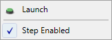 |
针对该管道任务中Launch（启动）步骤的选项和动作。
菜单项
|
 
|
关于管道任务中针对移动设备平台打包游戏步骤的选项和动作。
菜单项
|
|
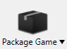 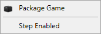 |
关于管道任务中针对PC或游戏机平台打包游戏步骤的选项和动作。
菜单项
|
|
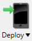 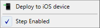 |
关于管道任务中部署打包的游戏到连接移动设备上的选项和动作。
菜单项
|

| 重新引导选中的目标平台。 |
|
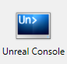 | 启动 虚幻控制台。 |
Profile列表
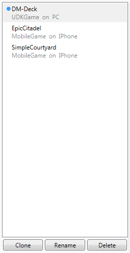
Profile列表显示了所有现有的配置profiles（概述文件）。一个配置profile（概述文件）是所有配置设置及pipeline job(管道任务)设置的一个单独的集合。Unreal Fonrtend使用profile（概述文件）作为快速并轻松地在编译不同游戏、不同目标平台等之间切换的方式。可以针对编辑和烘焙、烘焙和打包、烘焙和打包及部署等设置Profiles（配置概述文件）。然后，简单地选择适当的profile并点击 Start(启动) 按钮将会根据该profile的配置设置执行和该prifile相关的 管道任务的动作。 可以通过 克隆 、复制现有profile（配置概述文件）来创建新的profiles。要想克隆一个profile，只需选中要克隆的profile并点击 按钮即可。这是将出现新的profile。新的profile的名称是原始profile的名称加 " - Copy"后缀。 要想重命名一个profile，只需选中要重命名的profile并点击 按钮即可。输入新的名称并按下
要想重命名一个profile，只需选中要重命名的profile并点击 按钮即可。输入新的名称并按下 回车 键来提交新的名称。
 要想删除一个profile，只需选中要删除的profile并点击
要想删除一个profile，只需选中要删除的profile并点击 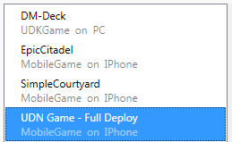
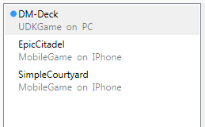
关联菜单
- Clone Profile(克隆Profile) -创建一个选中的profile的副本。
- Rename Profile(重命名Profile) - 使得选中的profile可编辑。
- Delete Profile(删除Profile) - 删除选中的profile。
配置设置
 Configuration Settings(配置设置)面板包含了用于根据当前的profile进行编译、烘焙、打包游戏的配置相关的所有设置及属性。
Configuration（配置） 按钮显示了配置选项，以便可以编辑它们。
Configuration Settings(配置设置)面板包含了用于根据当前的profile进行编译、烘焙、打包游戏的配置相关的所有设置及属性。
Configuration（配置） 按钮显示了配置选项，以便可以编辑它们。
地图
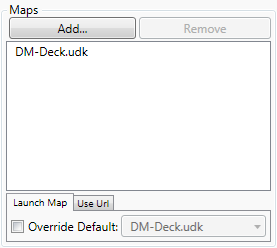
maps(地图) 部分从要烘焙及打包的游戏中添加或删除地图。当加载游戏时它也会设置要加载的默认地图或URL。烘焙器选项
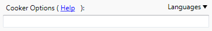
Cooker options(烘焙器选项) 部分显示了要为内容烘焙器设置的命令行选项及要设置的烘焙语言。 Languages(语言)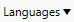
打开语言列表，允许您选择烘焙哪种语言。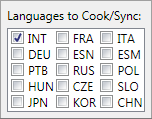
启动选项
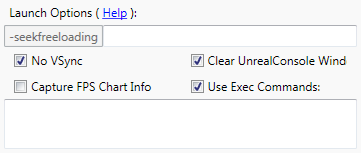
Launch Options(启动选项) 部分允许设置命令行选项及其他属性以便启动游戏。| 选项 | 描述 |
|---|---|
| No VSync(没有VSync) | 如果选中该项，则禁用VSync。 |
| Capture FPS Chart Info(捕获FPS图表信息) | 如果选中该项，将会在运行游戏时捕获FPS图表信息。 |
| Clear UnrealConsole Wind（清除虚幻控制台） | 如果选中该项，将会在每次启动游戏时清除虚幻控制台窗口。 |
| Use Exec Commands(使用可执行命令) | 如果选中该项，将会显示一个文本框，允许您输入一系列的可执行命令，当游戏启动时将会执行。 |
Targets（目标）
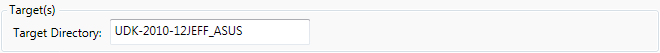
Targets(目标) 部分设置用于查找调试目标的目录。 注意: 仅当在配置选项部分中选中的 Platform(平台) 是PC或游戏机平台时才显示这个部分。移动设备
| 模式 | 描述 |
|---|---|
| Default（默认） | 打包要部署到连接的iOS设备上的iOS游戏，以便进行测试或专门用途的发布。 |
| Distribution(发布) | 打包iOS游戏，以便提交到App Store上。使用该模式打包的游戏不能直接部署到iOS设备上。 |
Active Instances(激活的实例)
 当目标平台是移动设备时， Active Instances(激活的实例)列表中将会显示当前运行游戏的所有设备。
注意: 仅当在配置选项部分中选中的 Platform(平台) 是移动设备平台时才显示这个部分。
当目标平台是移动设备时， Active Instances(激活的实例)列表中将会显示当前运行游戏的所有设备。
注意: 仅当在配置选项部分中选中的 Platform(平台) 是移动设备平台时才显示这个部分。
输出窗口
 Output Window(输出窗口) 显示了Unreal Frontend正在执行的动作的进程，包括一般信息、警告及错误。
Output Window(输出窗口) 显示了Unreal Frontend正在执行的动作的进程，包括一般信息、警告及错误。
使用Unreal Frontend
Pipeline Jobs（管道任务）
Unreal Frontend提供了设置管道任务的功能，或者是说提供了是按队列执行一系列任务的功能。这个任务序列中的任务将会一个接着一个地完成，并在输出窗口中显示任务的进度，包括任何警告或错误。管道任务使得执行多个必要的任务来编译及打包虚幻引擎3游戏变得更加简单高效，因为完整的编译过程可能要花费一定的时间。通过使用管道任务，可以配置及启动这个过程，从而允许Unreal FrontEnd来处理所有不同的步骤，而这个过程中您可以做其他工作。 目前不属于管道任务一部分的步骤将会在其上面显示 Skip(跳过) 字样。 通过在某个步骤的菜单中切换 Step Enabled(启用步骤) 菜单项 可以添加任何单独任务到管道任务中。 这个步骤现在已经启用并且作为管道任务的一部分执行。_Skip_ 覆盖层将不再显示，并且将切换打开菜单中的 Step Enabled(启用步骤) 项。
这个步骤现在已经启用并且作为管道任务的一部分执行。_Skip_ 覆盖层将不再显示，并且将切换打开菜单中的 Step Enabled(启用步骤) 项。
 按下工具条中的 Start（启动） 按钮便可以启动一个管道任务。
任何时候按下工具条中的 Stop（停止） 按钮便可以中断一个管道任务。
按下工具条中的 Start（启动） 按钮便可以启动一个管道任务。
任何时候按下工具条中的 Stop（停止） 按钮便可以中断一个管道任务。
设置配置
Unreal Frontend根据当前配置执行管道任务中的单独步骤并决定执行哪些步骤。每个 profile（配置概述文件）有它自己的配置设置。该配置由要编译的游戏、目标平台、游戏配置、脚本配置、烘焙器配置、要包含的地图及其他各种设置构成。 要想查看或修改选中的profile的当前配置选项，只需要点击 Configuration Settings(配置设置) 面板中的 Configuration(配置) 按钮即可。 为以下每项选择配置项：
为以下每项选择配置项：
- Game(游戏) - 从当前所有可用游戏项目中选择要使用的游戏。
- Platform(平台) - 选择要针对其进行编译的目标平台。
- Game Config(游戏配置) - 选择游戏所使用的配置。
- Script Config(脚本配置) - 选择编译脚本时使用的配置。
- Cook/Make Config（烘焙/制作 配置） - 选择烘焙时使用的配置（可执行文件）。 将会在该可执行文件上调用Make命令。